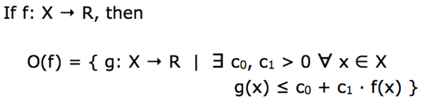

Definition of O(f)

If f is a function from some set X to the set of real numbers R, then O(f) is the set of all functions g from X to R such that there exist constants c0 and c1, with c1 positive, such that for every element x of the domain X g(x) is less than or equal to c0 plus c1 times f(x).
If it weren't for that constant c0, O(f) would be the set of all functions that are bounded above by a function proportional to f.
Because of that constant c0, which allows for some additive slop, O(f) is actually the set of all functions that are bounded above by a function roughly proportional to f.